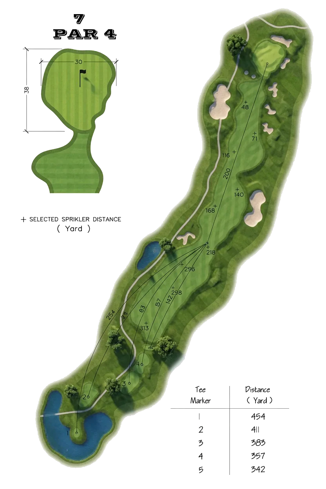
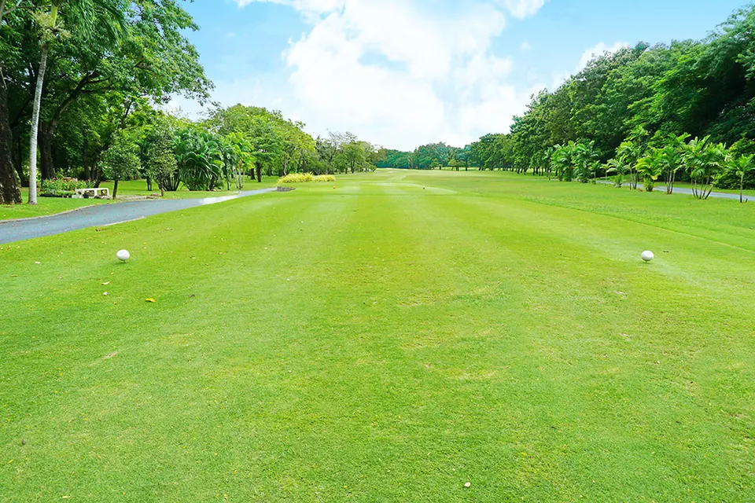
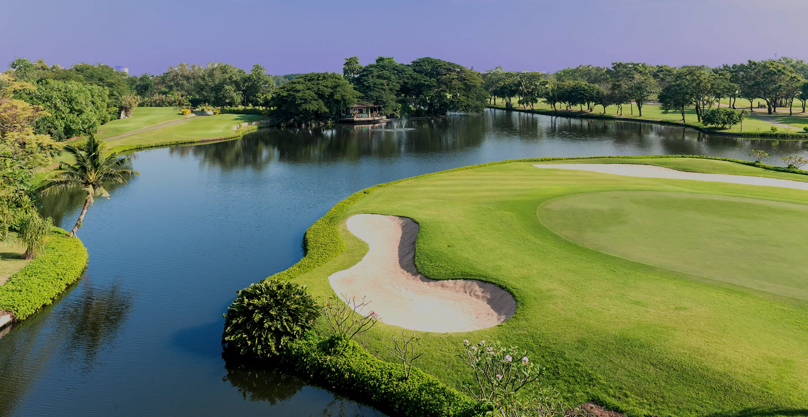

练习场
- 周一
- 11:00至21:30
- 周二至周日及公众假期
- 07:00至21:30
- 最后点单
- 21:00

照片：Krungthep Kreetha 协会
球场
从导航栏中选择任一球洞，查看标准杆、各发球台码数、球场自己的示意图和实拍照片，再打开3D浏览器，立体查看水域与沙坑。
1号发球台位于池塘中的小岛上，因此最长打法须先越水开球。落球区左侧还有第二个池塘。攻果岭区左侧有一个大沙坑把守，果岭右侧有一组沙坑。
描述依据球场的球洞示意图撰写，有待球场审核。

这个球洞的示意图尚未发布，正在等待俱乐部提供。

前九洞：标准杆36杆。第10洞的详细信息正在与球场核实。打开记分卡

打球前后
两层练习场，夜间有灯光照明。日常练习无需预约，空余打位和球价请向柜台咨询。
练习场页面
这些学校都在协会的练习场授课。课程请直接向各学校预约，点选学校即可查看联系方式。
查看全部高尔夫学校泰式料理，可在室内或俯瞰球场的露台用餐
意式融合菜，共两层，设有露台、包间和卡拉OK
宴会厅和会议室适合举办庆典、婚礼和企业活动。场地面积和价格尚未公布，可向办公室询价。
出售球具和服装，没带球杆也可以租借整套球杆。租金未公布，请到店咨询。
专卖店页面
营业状态按公布的时间以曼谷时间计算，当天请致电确认。
到访
曼谷 Bang Kapi 区 Hua Mak，Krungthep Kreetha 路282号，邮编10240
曼谷 Bang Kapi 区 Hua Mak，Krungthep Kreetha 路282号，邮编10240
开球时间 0-2736-0378-9
© OpenStreetMap 贡献者
地图未能加载。 打开 Google Maps